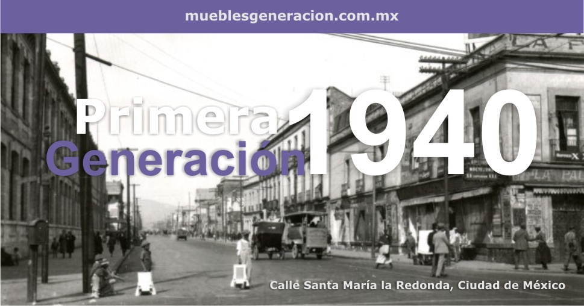
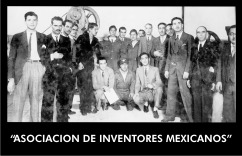
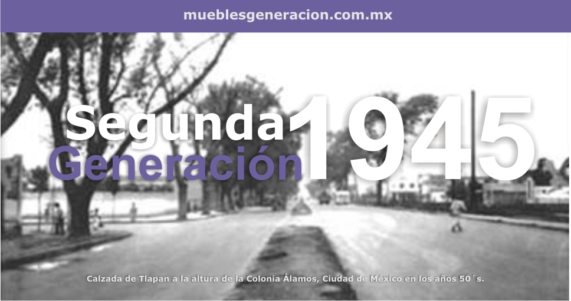
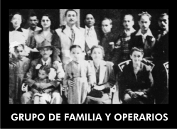
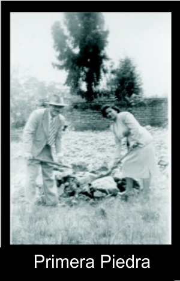
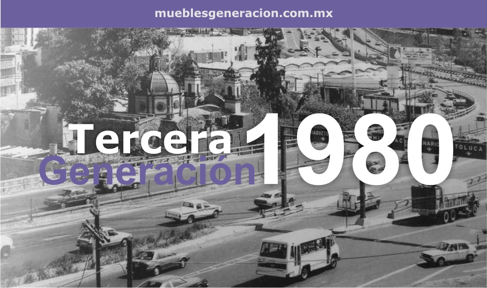
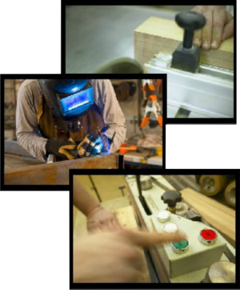
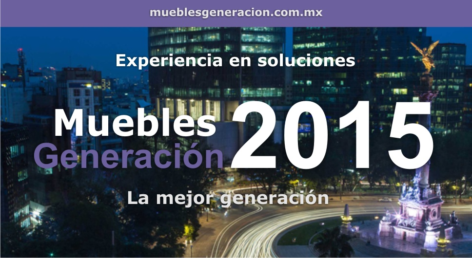
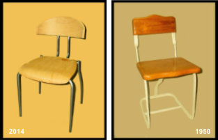

 La palabra "Generación" conforma históricamente un período de tiempo determinado. El crecimiento de una nación, empresa, familia o persona se mide por generaciones. Se habla de mí “generación”, cuando se especifican actividades comúnes a grupos de personas conformadas al paso de tiempo. En cada generación encontramos ciclos marcados de avance o retroceso de acuerdo a como hicieron frente a sus circunstancias históricas.
 La primera Generación (abuelo) surgió aproximadamente en la década de los 40´s (C. 1940) de gran ingenio, laborioso y visionario quien representaba a diversas empresas estadounidenses en México estudia la posibilidad de no continuar con la importación y establecer una pequeña industria ubicada en la calle de Santa María la Redonda, Colonia Guerrero en la Ciudad de México para fabricar mobiliario docente.
En esa década el mobiliario docente era importado de Estados Unidos, se traía de Chicago, Illinois. Fue miembro fundador de la Asociación de Inventores Mexicanos, participando en diversos proyectos de interés nacional.
Nuestro país en ese entonces buscaba incrementar la educación oficial y acabar con el alto índice de analfabetismo. El objetivo fundamental era que la mayoría de la población cursara mínimamente la primaria. El presidente Lázaro Cárdena del Río apoyó con gran entusiasmo el proyecto presentado para la fabricación nacional de mobiliario docente.
La primera Generación tuvo a su paso tropiezos por la falta de materias primas apropiadas y escasas, maquinaria cara de importación, así como realizar la gran tarea de diseñar modelos adecuados necesidades rurales y citadinas docentes de la época.
 En la década de los 50´s (C. 1950), la segunda Generación funda “Muebles y Equipos Metálicos Escolares”, en las calles de Castilla, Colonia Álamos de la Ciudad de México, la cual con el paso del tiempo y por causas diversas suspende sus actividades.
 México vive un ambiente y crecimiento durante los sexenios venideros. A finales de los 50´s, en los periodos de los presidentes Lic. Adolfo López Mateos, Lic. Gustavo Díaz Ordaz y Lic. Luis Echeverria Alvarez se da un fuerte impulso a la educación oficial, empiezan a surgir y crecer centros educativos de iniciativa privada.
La paridad del peso a $ 12.50 por dólar, la protección del mercado interno permite un crecimiento de la economía nacional y con ello la expansión y florecimiento de muchos Centros Educativos. La explosión demográfica incrementa notablemente la población en planteles preescolares, como consecuencia también se empiezan a acrecentar primarias, secundarias y preparatorias.
  En la década de los 80´s surge la tercera Generación, quienes fundan “Muebles Generación” que cuenta con la experiencia de tres generaciones, con 70 años de dedicación de empresarios comprometidos con la Comunidad Educativa del país.
Hemos atravesado periodos de altas y bajas, con la consigna férrea de entrega al trabajo, innovando en diseño y materiales para lograr productos que garanticen al usuario el mayor confort y resistencia; a la Institución una magnifica inversión y precio competitivo y a la Comunidad comprometernos en cuidar de nuestro entorno ecológico, utilizando para la fabricación de nuestro mobiliario, materias primas controladas y bio degradables. Esto nos ha permitido la manufactura de mobiliario competitivo, mejorando día a día la calidad de nuestros productos, esmerando siempre nuestro servicio, buscando ser la mejor inversión en mobiliario docente.
 En Muebles Generación, S.A. de C.V. nos hemos distinguido por ser punta de lanza en diseño y fabricación de mobiliario docente.
El modelo tradicional de proceso enseñanza-aprendizaje ha ido evolucionando ofreciendo más opciones para el trabajo en equipo, trabajo interactivo y multisensorial, donde el mobiliario adecuado facilita diversas escenografías en apoyo a la interacción en diferentes actividades, mobiliario auxiliar para nuevas tecnologías, mobiliario de apoyo, mobiliario para capacidades diferentes.
 Exigentes en la elección de materiales, cuidadosos en los acabados y la ergonomía. Consideramos que el Mobiliario Docente debe contar con cinco cualidades intrínsecas en su diseño: Estético, Confortable, Funcional, Resistente y Reciclable.
Sugerimos una gama de colores para las diferentes atmósferas que conforman un plantel de preescolar, educación básica, media, universitaria, postgrado, capacitación. Colores para facilitar mayor nivel de atención, colores que motiven a socializar, así como una gama que sugieran efectos emocionales y psicológicos positivos.
Continuamente estamos investigando, diseñando e innovando mobiliario que cumpla con los requisitos para lograr una mayor concentración, comodidad y gusto en el alumnado por su mobiliario, redundando todo en un mayor aprovechamiento académico.
“MG ofrece en todos sus productos garantía contra defectos de fabricación y vicios ocultos”.
Especificamos los materiales de nuestros productos con toda claridad para que la Institución sepa exactamente la calidad de lo que compra.